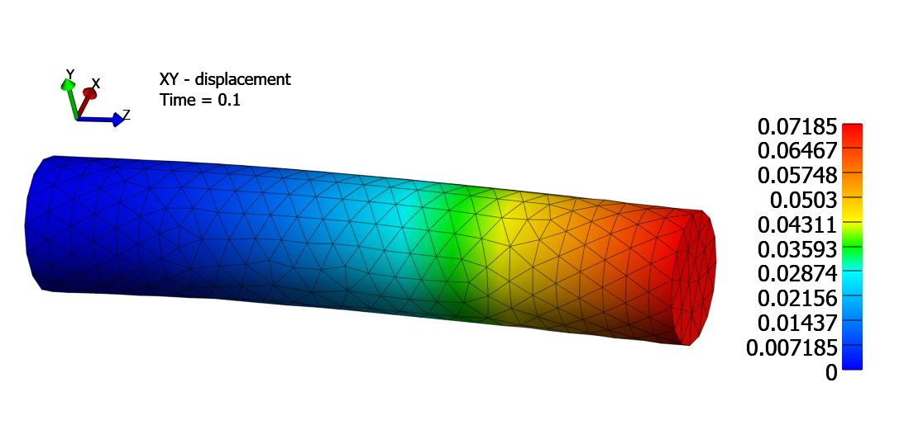
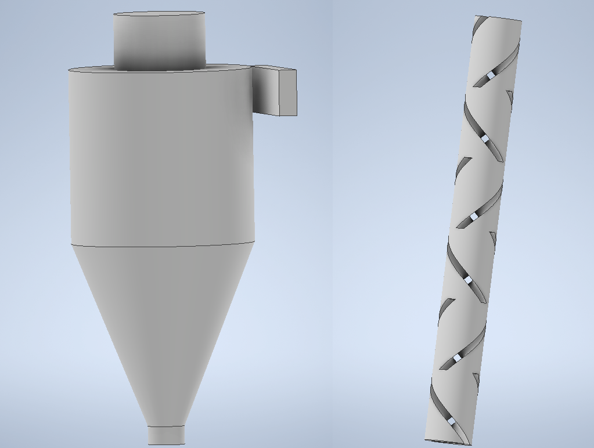
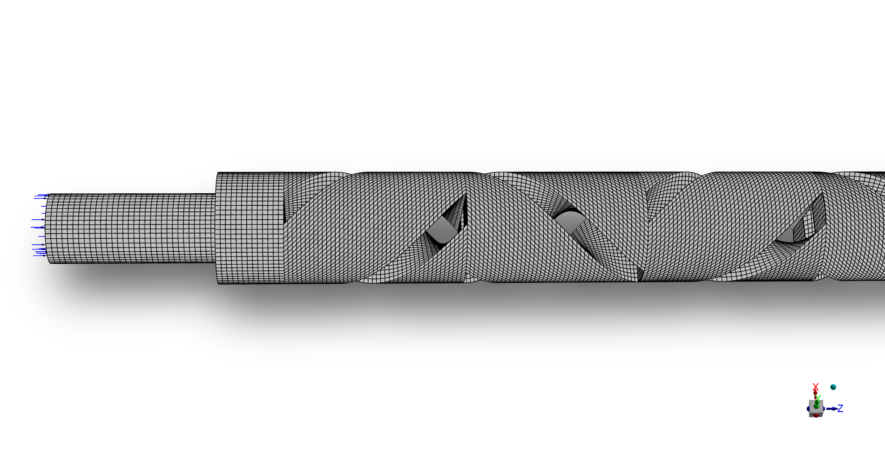
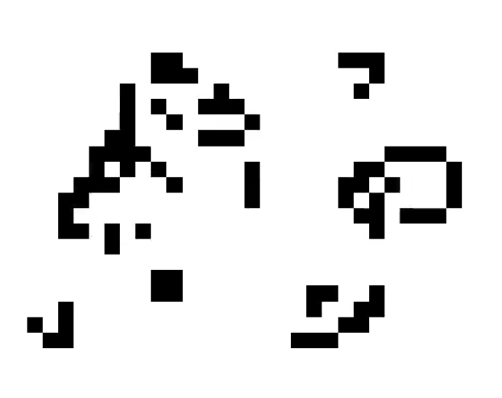
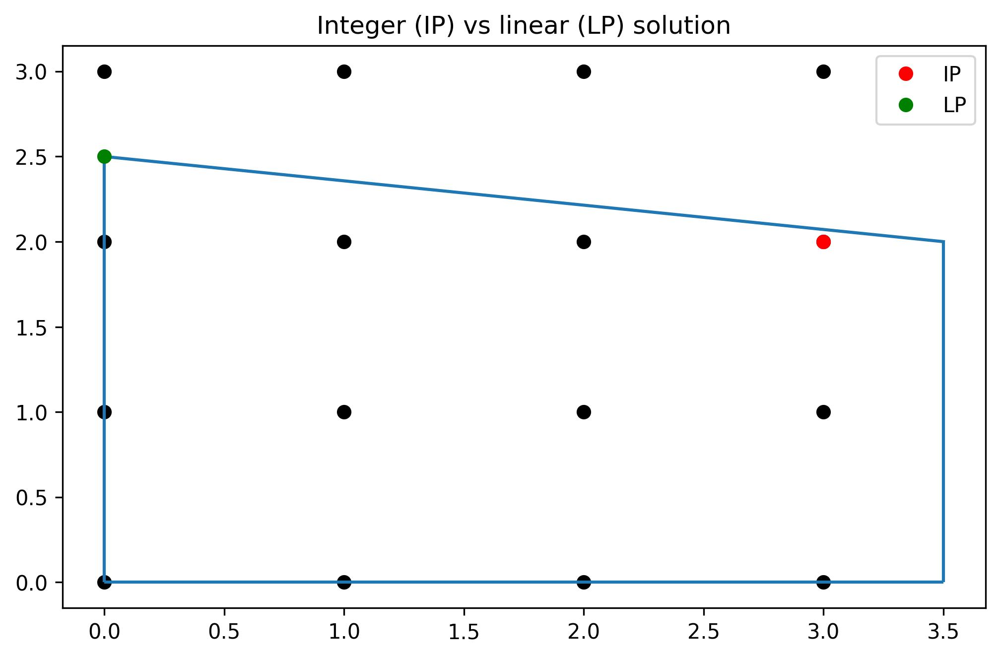

Generating geometry and mesh over and over again can be time consuming. To save some time I created a demo to automate the entire processs including simulation case file definition. The case here is a whole
cylinder with a fixed support on one end and force applied on the opposite end.
The geometry and its meshing were automated using Salome API and Python. The tetrahedral mesh information in .mesh file was processed and used to generate FEBio input file to run the simulations.


3D hexahedral mesh of Kenics helical static mixer from my Master's thesis. For multiphase simulation combined with Population Balance
Equation tetrahedral mesh had too poor quality. Achieving hex mesh in ANSYS Meshing required a lot of iterations and planning how to divide
the geometry at the 1st step - modelling in CAD.


Implementation of a 2D population growth simulation. I used a GPU to accelerate the simulations and analyzed its performance
by comparing it to the CPU simulation time. For 25 million cells the GPU solution time is twice faster than the 1 core CPU simulation for 25 thousand cells.

Here I'm just learning the OR-tools provided by Google, and optimization in general for future problems.